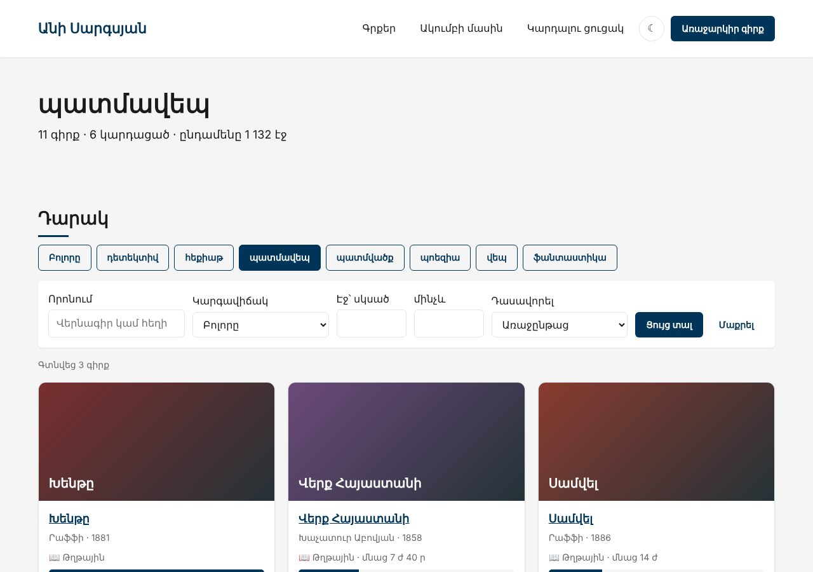
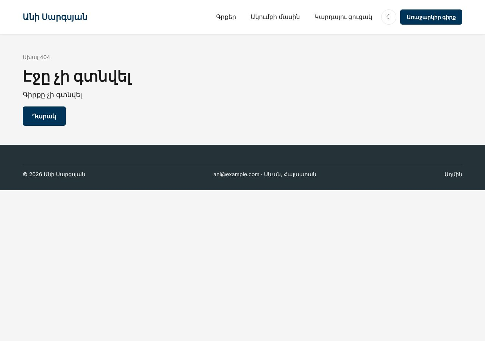

Տնային աշխատանք · PHP Դաս 15 · մինի-նախագիծ
Տասներկու .php էջը դառնում են մեկ մուտք՝ public/index.php։ Router-ը կարդում է հասցեն (/book/samvel, /genre/patmavep) և կանչում կոնտրոլերի մեթոդ, կոնտրոլերը վերադարձնում է Response։ Document root-ը public/ է, ուստի .env-ը և src/-ը այլևս հասանելի չեն բրաուզերից։
Դաս 01–15․ front controller, .htaccess, Router (preg_match, {slug}), Request, Response, կոնտրոլերներ կոնստրուկտորով, HttpException, http_build_query, urldecode։ Մուտք և CSRF՝ Դաս 16։


$ curl -i http://localhost:8000/.env
HTTP/1.1 404 Not Found
Content-Type: text/html; charset=utf-8
$ curl -i -X POST http://localhost:8000/book/samvel
HTTP/1.1 405 Method Not Allowed
$ curl -i http://localhost:8000/book/%D5%B6%D5%B8%D6%82%D5%A9%D5%A2%D5%B8%D6%82%D6%84
HTTP/1.1 404 Not FoundՇարունակիր քո նախագիծը։ Եթե բաց ես թողել նախորդ դասը, սկսիր Դաս 14-ի օրինակից։
starter/css/php-15.css — ժանրերի ակտիվ կոճակstarter/public/.htaccess — Apache-ի (Laragon) վերաուղղում դեպի index.php| Գործարկել |
|---|
composer install && php -S localhost:8000 -t public public/index.php |
css/ և images/՝ public/-ի մեջpublic/index.php՝ միակ PHP ֆայլը, որ բացվում է բրաուզերիցpublic$router = new Router();
require __DIR__ . '/../routes.php';
try {
$response = $router->dispatch(Request::fromGlobals());
} catch (HttpException $e) {
$response = Response::html(page('pages/error', ['code' => $e->status, 'message' => $e->getMessage()], (string) $e->status), $e->status);
} catch (Throwable $e) {
error_log((string) $e); // ⭐ մանրամասները՝ լոգում, ոչ էկրանին
$message = $debug ? $e->getMessage() : 'Տեխնիկական խնդիր։ Փորձիր ավելի ուշ։';
$response = Response::html(page('pages/error', ['code' => 500, 'message' => $message], '500'), 500);
}
$response->send();get(), post(), dispatch()/book/{slug} → #^/book/([^/]+)$#u, urldecode՝ հայերեն slug-ի համար (տնային 5)private function match(string $route, string $path): ?array
{
// {slug}-ը՝ «ցանկացած նիշ, բացի /»։ #-ը՝ սահմանազատիչ, որ /-ը չփախցնենք
$pattern = '#^' . preg_replace('#\{[a-z_]+\}#', '([^/]+)', $route) . '$#u';
if (!preg_match($pattern, $path, $matches)) {
return null;
}
array_shift($matches); // [0]-ն ամբողջ համընկնումն է
return array_map('urldecode', $matches); // հայերեն slug՝ %D5%BD... → ս (տնային 5)
}/genre/{slug} (տնային 2), /search (տնային 3)/admin/books/archive-ը՝ {id}-ից ԱՌԱՋ$router->get('/', [$bookController, 'index']);
$router->get('/genre/{slug}', [$bookController, 'genre']); // տնային 2
$router->get('/search', [$bookController, 'search']); // տնային 3
$router->get('/book/{slug}', [$bookController, 'show']);
$router->post('/book/{slug}/cover', [$bookController, 'cover']);
$router->post('/book/{slug}/read', [$bookController, 'read']);BookController, ListController, PageController, Admin\BookControllerpage($view, $data, $title)՝ layout-ի մեջ$book->url(), $genre->url()՝ հասցեն մեկ տեղումurl('/', [...])՝ http_build_query, դատարկները դուրսariaCurrent('/about') (տնային 4)/.env → 404 (Դաս 14-ում՝ 200)/book/նոութբուք → 404 էջ, ոչ սխալPOST /book/samvel → 405/?sort=title&page=2aria-current="page"| Սխալ | Ինչպես ուղղել |
|---|---|
| CSS-ը 404 է | Ուղիները՝ /css/main.css, ոչ css/main.css․ /book/samvel-ից հարաբերականը կփնտրի /book/css/ |
| Ամեն էջ՝ 404 | Laragon-ում Document Root-ը չես փոխել, կամ .htaccess-ը չկա |
/admin/books/archive-ը բացում է «archive» id-ով գիրքը | Հերթականությունը routes.php-ում |
| php -S-ով CSS-ը ստանում է HTML | Router-ի սկզբում՝ if (PHP_SAPI === 'cli-server' && is_file(...)) return false; |
Սրանք Դաս 15-ի տնային աշխատանքի կետերն են։ «մինի-նախագծում» նշվածները արդեն կատարել ես վերևի քայլերում՝ Անիի ակումբում։ Մնացածը կատարիր ՏեխնոՄարկետում, ինչպես գրված է դասում։
/.env-ի պատասխանի սքրինշոթը։ մինի-նախագծում/category/{slug} ուղին և ProductController::category() մեթոդը։ մինի-նախագծում/search ուղին ?q= պարամետրով։ մինի-նախագծումaria-current="page" մենյուում isCurrent()-ով (HTML Դաս 18)։ մինի-նախագծում/product/նոութբուք։ Աշխատո՞ւմ է urldecode-ը։ մինի-նախագծումProductController-ը։ Կա՞ դրանում SQL կամ HTML։ մինի-նախագծումԵրբ բաժին 03-ի բոլոր կետերը նշված են, բացիր օրինակը։ Օրինակում lab-… ֆայլերը փորձնական են․ դրանք հաջորդ դասի օրինակում այլևս չկան։ Գործարկելուց առաջ ստեղծիր բազան example/sql/-ի ֆայլերով և .env-ը (composer install)։ Գտիր մեկ բան, որ դու արել ես այլ կերպ, և մտածիր՝ որն է ավելի հասկանալի և ինչու։ Քո լուծումը կարող է տարբերվել և լինել ճիշտ։